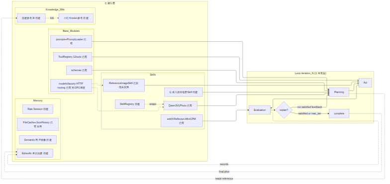
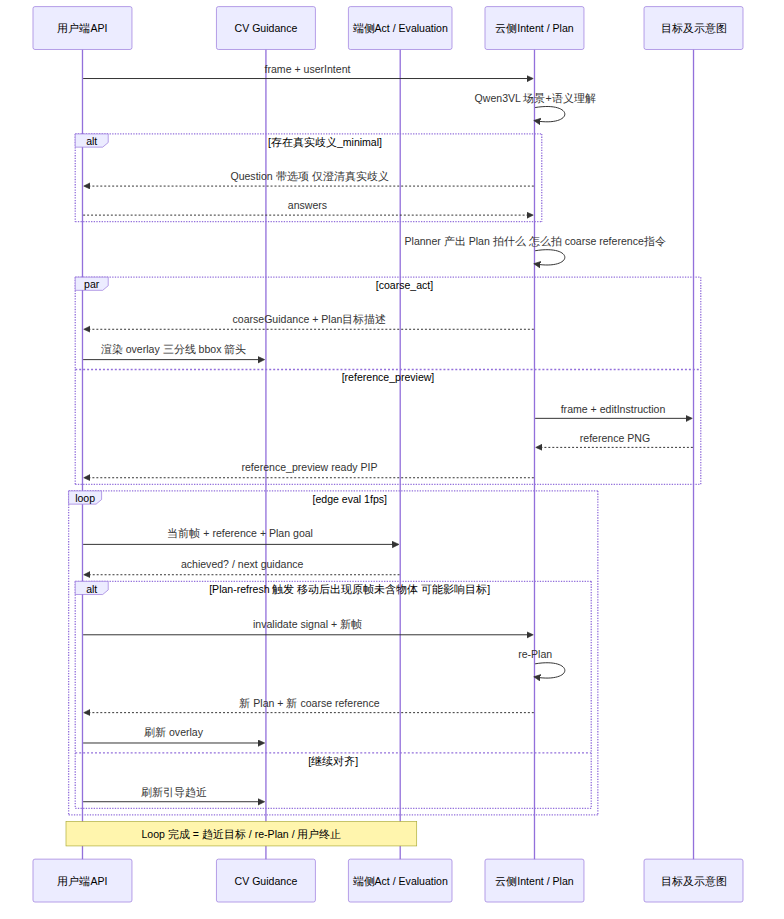
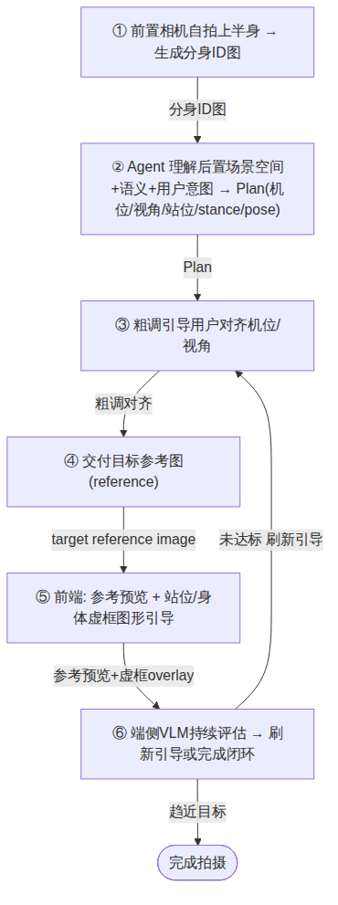

排布：左为 Loop iteration_N 主线骨架；右自上而下为 Skills / Base_Modules / Knowledge_Wiki / Memory。节点与连线内容与 01 §3.1 一致，仅优化排布与美观。
---
config:
layout: elk
---
flowchart LR
subgraph loop ["Loop iteration_N (主线骨架)"]
direction TB
PlanN[Planning] --> ActN[Act] --> EvalN[Evaluation] --> RepN{replan?}
RepN -->|not satisfied feedback| PlanN
RepN -->|satisfied or max_iter| DoneN[complete]
end
subgraph right ["右侧分层"]
direction TB
subgraph skills ["Skills"]
direction TB
VLM[Qwen3VLPhoto 已有]
RefImg[ReferenceImageSkill 已实现未实测]
EditMini[edit环Reflector+MiniCPM 已有]
Scenario[分身入画等场景Skill 待建]
Reg[SkillRegistry 待建]
end
subgraph base ["Base_Modules"]
direction TB
Schema[schemas 已有]
SysP[prompts+PromptLoader 已有]
Route[models/factory HTTP routing 已有 无GPU调度]
ToolCall[ToolRegistry 12tools 已有]
end
subgraph wiki ["Knowledge_Wiki"]
SelfLib[自建参考库 待建]
XHS[小红书notes参考 待建]
end
subgraph mem ["Memory"]
Prim[FileCache+JsonHistory 已有 未用]
Episodic[Episodic 单次拍摄 待建]
Semantic[Semantic 用户画像 待建]
RawS[Raw Session 待建]
end
end
Schema --> PlanN
SysP --> PlanN
Route -.-> VLM
Route -.-> RefImg
ToolCall --> ActN
VLM --> PlanN
RefImg --> ActN
Scenario --> PlanN
Reg -.wraps.-> VLM
EditMini --> EvalN
EvalN -.records.-> Episodic
DoneN -.final photo.-> Episodic
PlanN -.reads reference.-> SelfLib
SelfLib -.link.-> XHS
渲染图（mermaid-cli + ELK 引擎生成）：

层状态表（已有 / 待建 / 复用参考）：
| 层 | 状态 | 关键文件 / 说明 |
|---|---|---|
| Schema | 已有 | schemas/{plan,action,state,tool,shooting,perception}.py |
| System Prompt | 已有 | prompts/*.md + agents/prompt_loader.py |
| Model Routing | 已有（HTTP only，无 GPU 调度） | models/factory.py、models/protocols.py（StructuredVisionClient/ImageGenerationClient） |
| Tools-call | 已有（12 tools / 4 layer） | tools/registry.py::create_default_tool_registry、schemas/tool.py、workflow/compiler.py、workflow/executor.py |
| Loop — 编辑环 | 已有 | workflow/image_loop.py::ImageLoop.run；config.yaml loop.max_iterations |
| Loop — 拍照 Act 环 | 待建（P3+） | workflow/shooting_loop.py 仅两段式，无 evaluator/replan |
| Skills — base | 已有（无 registry） | skills/qwen3vl_photo.py、skills/reference_image.py（PR1 已实现未实测） |
| Skills — registry | 待建 | 现直构于 app_shooting.py / services/gateway/factory.py |
| Agents | 已有（Perception 未接线） | agents/{planner,reflector,intent_agent,shooting_planner_agent,perception}.py |
| Memory — 原语 | 已有（未被环使用） | memory/{cache,history,image_state}.py（FileCache=路径助手；JsonHistoryStore=append-only JSONL） |
| Memory — 三分类 | 待建 | 无；现用 schemas/state.py::ExecutionState + workflow/state_manager.py |
| Knowledge Wiki | 待建 | 零代码；自建库 / 小红书 notes 参考 |
| MiniCPM 端侧 / 拍照精调 | 待建（P5） | 仅编辑环 :8001 已有：agents/reflector.py + config.yaml structured_evaluation |
| 端云分裂 / edge runtime | 待建 | 当前 Edge = 浏览器送帧（P2 已有）；无端侧推理运行时 |
读图要点：Loop 主线骨架在左，四层栈在右按 Skills→Base→Wiki→Memory 自上而下。编辑环 ImageLoop（已有）跑完整 Plan→compile→execute→evaluate→replan，max_iterations 由 config.yaml loop.max_iterations 注入，落盘 outputs/logs/state_iter_NN.json 与 outputs/plans/plan_iter_NN.json；拍照 Act 环（待建）目前 ShootingLoop 仅 collect_intent_phase→confirm_and_plan 两段式。基础设施层全部已有；模型路由 HTTP-only（不变量：只注入 HTTP 客户端，不做 GPU 调度）。Skills 层 base skill 已有但无 registry；Memory 薄原语已有但未被任一环使用，三分类待建；Wiki/小红书/端侧/端云分裂零代码。
Agent 分裂为云端（Intent / Plan / 目标示意图）与端侧（CV Guidance / 端侧 Act·Evaluation）两环境。云端负责理解场景+意图、必要 Question、Plan 生成与目标参考图；端侧负责 1fps 帧评估与引导刷新。
sequenceDiagram
participant Edge as 用户端API
participant CV as CV Guidance
participant Mini as 端侧Act / Evaluation
participant Cloud as 云侧Intent / Plan
participant RefGen as 目标及示意图
Edge->>Cloud: frame + userIntent
Cloud->>Cloud: Qwen3VL 场景+语义理解
alt 存在真实歧义_minimal
Cloud-->>Edge: Question 带选项 仅澄清真实歧义
Edge-->>Cloud: answers
end
Cloud->>Cloud: Planner 产出 Plan 拍什么 怎么拍 coarse reference指令
par coarse_act
Cloud-->>Edge: coarseGuidance + Plan目标描述
Edge->>CV: 渲染 overlay 三分线 bbox 箭头
and reference_preview
Cloud->>RefGen: frame + editInstruction
RefGen-->>Cloud: reference PNG
Cloud-->>Edge: reference_preview ready PIP
end
loop edge eval 1fps
Edge->>Mini: 当前帧 + reference + Plan goal
Mini-->>Edge: achieved? / next guidance
alt Plan-refresh 触发 移动后出现原帧未含物体 可能影响目标
Edge->>Cloud: invalidate signal + 新帧
Cloud->>Cloud: re-Plan
Cloud-->>Edge: 新 Plan + 新 coarse reference
Edge->>CV: 刷新 overlay
else 继续对齐
Edge->>CV: 刷新引导趋近
end
end
Note over Edge,Mini: Loop 完成 = 趋近目标 / re-Plan / 用户终止
渲染图（mermaid-cli 生成）：

注：mermaid
sequenceDiagram宽高比由渲染器决定，源码无法强制 2:1；5 个 participant +par/loop自然横向展开，短标签使其更宽更净。若需严格 2:1 画幅，在渲染容器/CSS 设定（如固定宽度、横向滚动）。
读图要点：Question 极简原则（仅真实歧义、带选项、可答默认推荐，避免打断）；par coarse_act ∥ reference_preview 并行交付——粗调 overlay 即时下发，Qwen2511 参考图异步（≤30s 首版）到达 PIP；端侧 eval 闭环 1fps（输入=当前帧+目标参考+Plan goal 描述 → achieved?/下一步引导）；Plan-refresh 触发（Evaluation 发现使现有 Plan 失效的信息，典型：原帧缺失物体在用户按引导移动后出现且可能影响目标 → invalidate → re-Plan → 重新与云端通信）；现状：慢路径已有 P1/P2，端侧 eval 循环、Plan-refresh、edge runtime 均待建。
分身入画 Skill 打包完整 App 流程：前置自拍生成分身 ID 图 → 后置场景理解+意图 → Plan[机位/视角/站位/stance/pose] → 粗调引导 → 交付目标参考图 → 端侧持续评估闭环。下图每步为独立节点，便于后续逐步贴效果示意。
flowchart TB
S1["① 前置相机自拍上半身 → 生成分身ID图"]
S2["② Agent 理解后置场景空间+语义+用户意图 → Plan(机位/视角/站位/stance/pose)"]
S3["③ 粗调引导用户对齐机位/视角"]
S4["④ 交付目标参考图(reference)"]
S5["⑤ 前端: 参考预览 + 站位/身体虚框图形引导"]
S6["⑥ 端侧VLM持续评估 → 刷新引导或完成闭环"]
Done(["完成拍摄"])
S1 -->|分身ID图| S2
S2 -->|Plan| S3
S3 -->|粗调对齐| S4
S4 -->|target reference image| S5
S5 -->|参考预览+虚框overlay| S6
S6 -->|未达标 刷新引导| S3
S6 -->|趋近目标| Done
渲染图（mermaid-cli 生成）：

每步为独立节点，便于后续逐步贴效果示意。
| 步骤 | 复用 / 待建 |
|---|---|
| ① 前置自拍 + 分身 ID 图生成 | 待建（前置相机采集 + 身份图生成） |
| ② 后置场景理解 + Plan | 复用参考：IntentAgent/ShootingPlannerAgent/Qwen3VLPhotoClient（已有），需扩展前后置协同与 stance/pose 推理 |
| ③ 粗调引导 | 待建（cv-guide P3） |
| ④ 目标参考图 | 复用参考：ReferenceImageSkill（PR1 已实现未实测） |
| ⑤ 参考预览 + 虚框 overlay | 待建（overlay-compose P3；前端 canvas 渲染 GuidanceLayer） |
| ⑥ 端侧 VLM 持续评估 | 待建（MiniCPM 拍照精调 P5；云端 :8001 仅 edit 环已有） |
本文档独立维护与迭代；与 01-MVP期-方案设计及计划.md 后续同步。